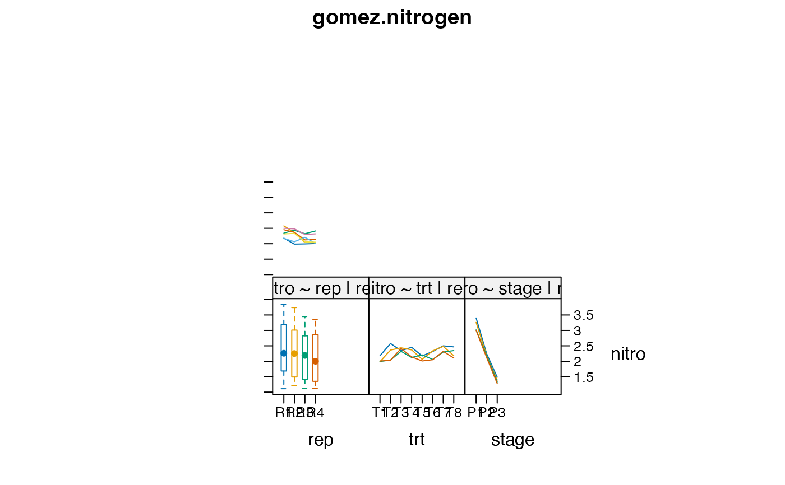
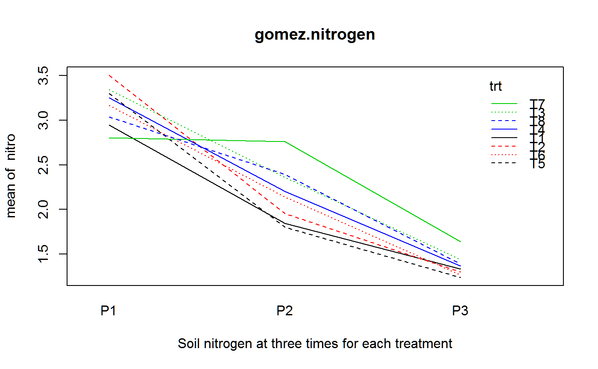

gomez.nitrogen.RdSoil nitrogen at three times for eight fertilizer treatments
A data frame with 96 observations on the following 4 variables.
trtnitrogen treatment factor
nitrosoil nitrogen content, percent
repreplicate
stagegrowth stage, three periods
Eight fertilizer treatments were tested.
Soil nitrogen content was measured at three times. P1 = 15 days post transplanting. P2 = 40 days post transplanting. P3 = panicle initiation.
Gomez, K.A. and Gomez, A.A.. 1984, Statistical Procedures for Agricultural Research. Wiley-Interscience. Page 259.
Used with permission of Kwanchai Gomez.
R-help mailing list, 9 May 2013. Data provided by Cyril Lundrigan. Analysis method by Rich Heiberger.
library(agridat) data(gomez.nitrogen) dat <- gomez.nitrogen # Note the depletion of nitrogen over time (stage) libs(HH) interaction2wt(nitro ~ rep/trt + trt*stage, data=dat, x.between=0, y.between=0, main="gomez.nitrogen")# Just the fertilizer profiles with(dat, interaction.plot(stage, trt, nitro, col=1:4, lty=1:3, main="gomez.nitrogen", xlab="Soil nitrogen at three times for each treatment"))#> #> Error: rep #> Df Sum Sq Mean Sq F value Pr(>F) #> Residuals 3 0.8457 0.2819 #> #> Error: rep:trt #> Df Sum Sq Mean Sq F value Pr(>F) #> trt 7 1.2658 0.18083 4.935 0.00201 ** #> Residuals 21 0.7695 0.03664 #> --- #> Signif. codes: 0 '***' 0.001 '**' 0.01 '*' 0.05 '.' 0.1 ' ' 1 #> #> Error: Within #> Df Sum Sq Mean Sq F value Pr(>F) #> stage 2 52.04 26.021 715.871 < 2e-16 *** #> trt:stage 14 3.57 0.255 7.008 1.53e-07 *** #> Residuals 48 1.74 0.036 #> --- #> Signif. codes: 0 '***' 0.001 '**' 0.01 '*' 0.05 '.' 0.1 ' ' 1# Gomez table 6.18 # Treatment 1 2 3 4 5 6 7 8 cont <- cbind("T7 vs others" = c( 1, 1, 1, 1, 1, 1,-7, 1), "T8 vs others" = c( 1, 1, 1, 1, 1, 1, 0,-6), "T2,T5 vs others" = c(-1, 2,-1,-1, 2,-1, 0, 0), "T2 vs T5" = c( 0, 1, 0, 0,-1, 0, 0, 0)) contrasts(dat$trt) <- cont contrasts(dat$trt)#> T7 vs others T8 vs others T2,T5 vs others T2 vs T5 #> T1 1 1 -1 0 -3.028130e-01 #> T2 1 1 2 1 2.775558e-17 #> T3 1 1 -1 0 -2.101031e-01 #> T4 1 1 -1 0 -3.487772e-01 #> T5 1 1 2 -1 -1.387779e-17 #> T6 1 1 -1 0 8.616933e-01 #> T7 -7 0 0 0 1.387779e-17 #> T8 1 -6 0 0 -2.775558e-17 #> #> T1 -6.632738e-01 -4.673031e-01 #> T2 8.326673e-17 1.387779e-17 #> T3 -1.136421e-01 8.324315e-01 #> T4 7.387109e-01 -2.875078e-01 #> T5 5.551115e-17 1.387779e-17 #> T6 3.820501e-02 -7.762061e-02 #> T7 5.551115e-17 2.775558e-17 #> T8 5.551115e-17 4.163336e-17m2 <- aov(nitro ~ Error(rep/trt) + trt*stage, data=dat) summary(m2, expand.split=FALSE, split=list(trt=list( "T7 vs others"=1, "T8 vs others"=2, "T2,T5 vs others"=3, "T2 vs T5"=4, rest=c(5,6,7)), "trt:stage"=list( "(T7 vs others):P"=c(1,8), "(T8 vs others):P"=c(2,9), "(T2,T5 vs others):P"=c(3,10), "(T2 vs T5):P"=c(4,11), "rest:P"=c(5,6,7,12,13,14)) ))#> #> Error: rep #> Df Sum Sq Mean Sq F value Pr(>F) #> Residuals 3 0.8457 0.2819 #> #> Error: rep:trt #> Df Sum Sq Mean Sq F value Pr(>F) #> trt 7 1.2658 0.1808 4.935 0.00201 ** #> trt: T7 vs others 1 0.3511 0.3511 9.581 0.00548 ** #> trt: T8 vs others 1 0.0455 0.0455 1.242 0.27761 #> trt: T2,T5 vs others 1 0.0228 0.0228 0.621 0.43952 #> trt: T2 vs T5 1 0.1176 0.1176 3.209 0.08764 . #> trt: rest 3 0.7289 0.2430 6.630 0.00252 ** #> Residuals 21 0.7695 0.0366 #> --- #> Signif. codes: 0 '***' 0.001 '**' 0.01 '*' 0.05 '.' 0.1 ' ' 1 #> #> Error: Within #> Df Sum Sq Mean Sq F value Pr(>F) #> stage 2 52.04 26.021 715.871 < 2e-16 *** #> trt:stage 14 3.57 0.255 7.008 1.53e-07 *** #> trt:stage: (T7 vs others):P 2 2.14 1.068 29.391 4.63e-09 *** #> trt:stage: (T8 vs others):P 2 0.54 0.268 7.373 0.001613 ** #> trt:stage: (T2,T5 vs others):P 2 0.64 0.321 8.843 0.000538 *** #> trt:stage: (T2 vs T5):P 2 0.02 0.011 0.298 0.743303 #> trt:stage: rest:P 6 0.23 0.038 1.051 0.404967 #> Residuals 48 1.74 0.036 #> --- #> Signif. codes: 0 '***' 0.001 '**' 0.01 '*' 0.05 '.' 0.1 ' ' 1